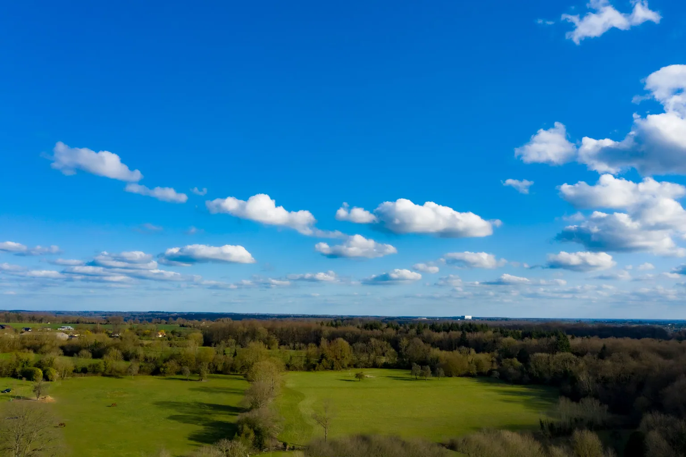

Votre arrivée
au domaine.
700 chemin de la Boullaye, 14100 Fauguernon. Au cœur du Pays d’Auge.

Bienvenue en Normandie.
À environ 2 h de Paris et à moins de 30 min de Deauville et Honfleur. Le domaine se trouve au bout d’une impasse, dans un hameau bordé de champs.
Un parking privé pour huit voitures vous attend, à 50 mètres de l’entrée piétonne. Utilisez les repères ci-dessous pour votre arrivée.
Ouvrir l’itinéraireRestons en contact.
ledomaineauxlions@gmail.com+33 (0)6 30 86 85 69700 chemin de la Boullaye
14100 Fauguernon, France
Les repères pour nous trouver.
Réserver le domaine.
Choisissez vos dates. Nous vous aidons à préparer la suite.